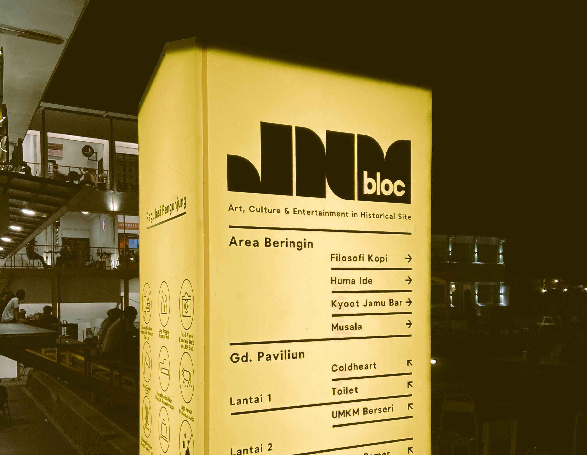
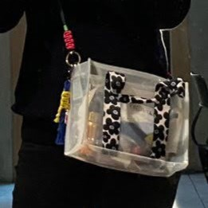

INGREDIENTS
Hai
Fira
:)
bagaimana Harimu?
semoga baik

Sudah berapa hari ya? atau bahkan bulan?, Aku tidak tahu, apakah Erik akan cepat mengantarkan tas ini atau bahkan dia lupa? seperti karpet yang kutitipkan padanya waktu itu, Setiap hari menelpon meminta kabar darinya saat itu untuk segera ke Makassar menemuimu. Kali ini tidak akan Aku paksa Erik ataupun sekedar menanyakan titipan ini, biarlah Erik yang menentukan.
Tentang tas ini, tidak ada maksud apa-apa selain memberikan kejutan-kejutan kecil untukmu. Sore itu, sepulang kerja, Aku dan Mas Apip melanjutkan perjalanan menuju JNM Bloc setelah ponselku bergetar oleh pesan masuk dari Erik yang berisi "sini, nongkrong di JNM bareng anak-anak", pesan ini langsung Aku kirimkan padamu juga, sekedar menginformasikan bahwa Aku tidak pulang dan menunggu kabarmu dari rumah tapi dari JNM. Di sana kami duduk di depan kedai COLDHEART, kedai tempatmu memesan Mocktail, minuman yang membuatmu penasaran dan pada akhirnya membuatmu geli akan rasanya, sembari kami mengobrol santai mataku tertuju ke arah toko persis di seberang kedai COLDHEART, lalu Aku beranjak dari tempat duduk dan berjalan santai ke arah toko tersebut, sambil Aku bergumam dalam kepala "apakah tas itu masih ada, tidak, ya?". Sampai di depan toko, mataku mulai menyisir barang pada etalase toko, soalnya, terakhir kali ke sini Aku melihat tas itu masih dipajang di depan pintu, persis di tempat Aku berdiri sekarang, mataku tidak menemukan tas itu!. Aku menghampiri penjaga toko dan bertanya, "permisi Kak, tas transparan yang biasanya dipajang di depan apakah masih ada?" Kakak yang baik menjawab "masih Kak, sisa satu ini" kata Kakak penjaga toko sambil berjalan ke arah lemari dan mengambil barang dari dalam lemari itu. Aku menghela nafas dan tersenyum.
Rencananya, kejutan-kejutan kecil ini akan terus Aku lakukan tanpa batas ruang dan waktu, tapi saat ini kamu memilih untuk menghentikan waktu, katamu "untuk sekarang, kita jalan masing-masing dulu", ada harapan dalam kalimat tersebut, hmm atau itu hanya kalimat penenang?, kalau kata Banda Neira Yang Patah Tumbuh, Yang Hilang Berganti. Semoga kamu ada pada bagian patah dan akan bertumbuh, bukan pada hilang kemudian terganti.
Yeay! Akhirnya sampai juga tas ini, tali yang kamu tambahkan, bagus. Maaf ya, Aku tidak menambahkan tali bercorak menarik di dalamnya, padahal rencana menambahkan tali yang menarik sudah ada dalam list-ku. Aku bingung saat menimbang antara motif bunga matahari atau motif hijau bergambarkan ilalang dan akhirnya aku tidak memilih keduanya, hehe, Aku memang lemah tentang memilih mana yang menarik dan indah dipandang tanpa bantuanmu.
Semoga tali baru yang kamu sematkan pada tas itu tidak membuat pundakmu sakit dan semoga tali itu kuat menahan barang-barang yang ada dalam tasmu, haha, terlihat jelas isinya penuh dengan barang kebutuhanmu
Hmm... saat membuka tas itu apakah kamu menghirup aroma parfum? semoga iya, Aku menyemprotkan parfum beberapa kali ke dalam tas itu tujuannya agar Aku seakan-akan hadir memberikan tas itu langsung padamu, haha. Parfum baru itu diberikan oleh Fadil saat mampir ke Jogja, aromanya cukup Aku suka.